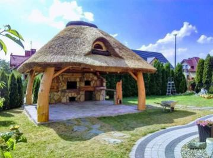

Altany biesiadne kryte strzechą
Otwarte i półotwarte konstrukcje z bali, w dowolnym kształcie i wielkości. Naturalna trzcina wodna i drewno, które starzeje się pięknie.
- — kształt okrągły, owalny, sześciokątny lub na wymiar
- — meble biesiadne z dębu lub topoli